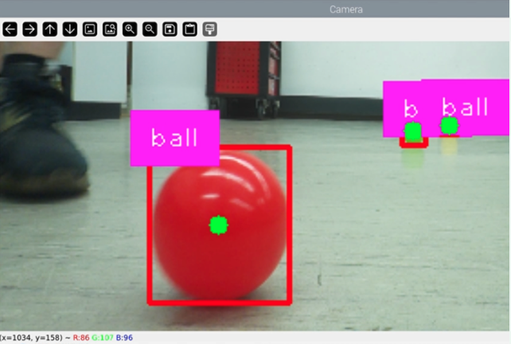
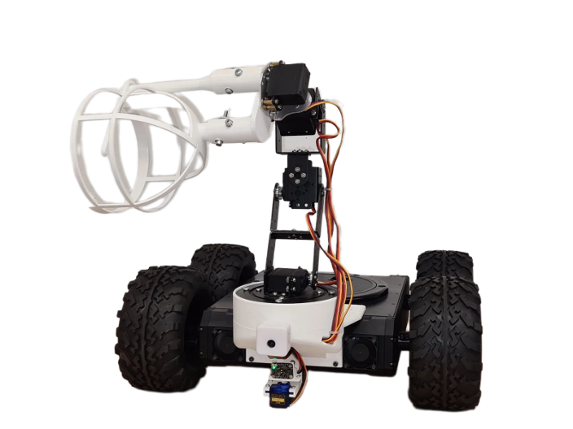
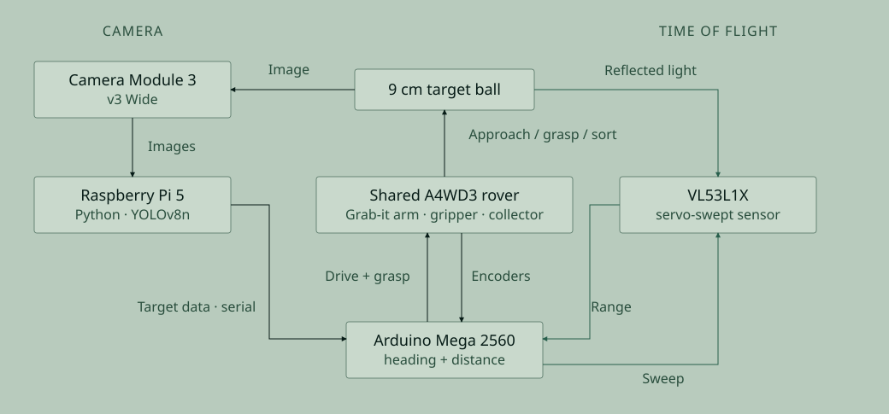

Autonomous harvesting robot
An indoor plastic-ball harvesting rover comparing ToF scanning with camera-based detection.
- Project period
- 09/2023 – 08/2024
- Context
- Engineering Office III & Product Engineering I, TH Köln
- Status
- Prototype and controlled comparison
- My contribution
- Software and Hardware architecture, CV performance optimisation
In collaboration with: Denis Tolkovets ↗
Reported retrieval time: 50.9 → 2.8 s/m in the indoor comparison across 18 target positions.


Context and my role
Denis Tolkovets and I developed a rover, robotic arm and gripper to locate, approach and collect plastic-ball “apples” indoors. The later comparison changed the perception stage on the same robot so we could examine how target detection affected retrieval.
I trained the object detector on 2,445 self-collected images and deployed the camera pipeline on a Raspberry Pi 5. The core platform and comparison are joint work.
Replace scanning while retaining the robot platform
The first version detected targets with a servo-swept time-of-flight (ToF) scanner. The second used camera-based detection on a Raspberry Pi 5, while the rover, arm and gripper remained largely unchanged. The camera screenshot above shows the targets identified in the image.
Two sensing systems on the same robot platform

Source: Harvest Helper comparison paper, Figure 1, p. 3. Full size ↗
Keep perception separate from actuator control
The camera pipeline provided target detections for the harvesting behaviour. An Arduino Mega 2560 handled heading, distance and actuator control. Keeping downstream behaviour comparable helped focus the experiment on the perception change.
The diagram separates information flow from the 12 V and 5 V power supplies. Labels are translated from the source architecture.
Hardware, information and power architecture

Source: Harvest Helper comparison paper, Figure 2, p. 5. Full size ↗
Results and limitations
The existing project record reports a comparison across 18 target positions on the same indoor track. The timing metric is retrieval time per metre (s/m), rather than the rover’s physical driving speed. The reported means were 50.9 s/m for the ToF implementation and 2.8 s/m for vision, a ratio of approximately 18.
| Measure | ToF scanning | Camera detection |
|---|---|---|
| Mean retrieval time | 50.9 s/m | 2.8 s/m |
| Observed task failure rate | 40% | 0% |
The vision version had no observed task failures in that test setup. This comparison does not establish a universal advantage over ToF or a zero failure rate in other environments. The source records 12 failures in 30 ToF attempts and none in 18 camera attempts. Timing ends at the start of the grasp sequence; missed detections or collisions required a new timed attempt, while grasp failures retained their measured approach time.
The comparison paper reports a t-test for timing and an F-test for the error-rate comparison.
Retrieval-time comparison at 18 target positions
Cell values in seconds · side positions ±0.5 m from the centre line
| Distance (m) | Left (s) | Centre (s) | Right (s) | Mean (s/m) |
|---|---|---|---|---|
| 3.0 | 130 | 128 | 129 | 43.0 |
| 2.5 | 112 | 109 | 111 | 44.3 |
| 2.0 | 92 | 90 | 92 | 45.7 |
| 1.5 | 73 | 71 | 73 | 48.2 |
| 1.0 | 55 | 52 | 54 | 53.7 |
| 0.5 | 36 | 34 | 36 | 70.7 |
| Reported mean (s/m) | 50.9 | |||
| Distance (m) | Left (s) | Centre (s) | Right (s) | Mean (s/m) |
|---|---|---|---|---|
| 3.0 | 7 | 7 | 7 | 2.3 |
| 2.5 | 6 | 6 | 6 | 2.4 |
| 2.0 | 5 | 5 | 5 | 2.5 |
| 1.5 | 4 | 4 | 4 | 2.7 |
| 1.0 | 2 | 3 | 3 | 2.7 |
| 0.5 | 2 | 2 | 2 | 4.0 |
| Reported mean (s/m) | 2.8 | |||
Source: Harvest Helper comparison paper, Figure 3, p. 7.
Side-by-side demonstration
The video shows the two harvesting implementations in operation. It complements the indoor comparison without establishing performance outside that setup.